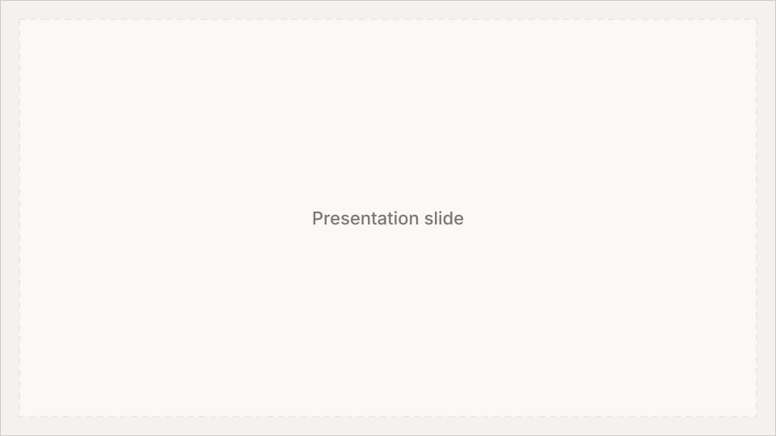

Leading marketing design for a healthcare startup

I was the sole person responsible for ScriptChain Health's social media presence across Instagram, LinkedIn, and TikTok for six months.

ScriptChain Health is an early-stage health tech startup building an agentic AI platform that uses food and exercise as medicine to treat metabolic syndrome and reduce hospital readmissions.
While I won't share exact statistics or the full strategy I created here, I'm happy to walk through both in an interview and explain my reasoning in more detail.
Over six months, I published 78 posts across three platforms, with shared content adapted for each channel, while also creating newsletters, event materials, a brochure, and investor presentations.
The 78 figure reflects total posts published, not 78 unique ideas. The same content that went to LinkedIn was also posted on Instagram and TikTok, with the exception of a few posts not being shared. Even so, every new post meant building separate Canva files resized to each platform's dimensions and format requirements.
Industry Research


Events
![[LinkedIn] JPM Conference.png](../assets/project-specific/scriptchain-health/social/%5BLinkedIn%5D%20JPM%20Conference.png)


![[LinkedIn] American Diabetes Association.png](../assets/project-specific/scriptchain-health/social/%5BLinkedIn%5D%20American%20Diabetes%20Association.png)
Educational (Relatable Tips)


Brand & Company Updates
![[LinkedIn] Future is personalized.png](../assets/project-specific/scriptchain-health/social/%5BLinkedIn%5D%20Future%20is%20personalized.png)
![[Instagram] Future is personalized.png](../assets/project-specific/scriptchain-health/social/%5BInstagram%5D%20Future%20is%20personalized.png)
![[LinkedIn] One-Size Liner.png](../assets/project-specific/scriptchain-health/social/%5BLinkedIn%5D%20One-Size%20Liner.png)
![[Instagram] One-Size Liner.png](../assets/project-specific/scriptchain-health/social/%5BInstagram%5D%20One-Size%20Liner.png)
Physical Marketing


LinkedIn banner

Investor & Conference Presentations

But how did I get here?
The accounts had been dormant for months, and there was no strategy, brand guidance, or handoff documentation waiting for me.
Instagram and LinkedIn hadn't seen activity since August 2025, and TikTok since February. My role responsibility was described as designing posts, but research, voice, strategy, and scheduling all fell to me as well.
A conversation about an upcoming company event made me realize their social media needed to encourage engagement over simply providing educational content.
From that point forward, I balanced educational content with posts that spoke directly to who ScriptChain is, what makes the platform meaningful through relatability, and where the company was showing up.


I researched competitors, tracked our own performance data, and turned those findings into a documented content strategy I handed off to the company.
Before defining ScriptChain's voice, I audited how peer companies in health tech and larger health systems used social, looking at cadence, audience, post types, and how they framed problems and solutions.
Artemis by Nomi Health is a B2B health tech company targeting providers and partner organizations, active on LinkedIn and Twitter. They post infrequently, about 1–2 times per month, with content focused on company events, speaking invitations, new team members, LinkedIn newsletters, holidays, and problem/solution posts.
Their problem/solution format usually opens with a stated problem or question hook, expands on the issue, introduces a solution or opportunity, and closes by tying it back to Artemis. Typical engagement stays under 10 reactions, with a few comments or reposts. Graphics present brief facts without requiring linked sources or heavy data visualization.


BC Platforms is another B2B peer targeting providers and partner organizations on LinkedIn. They post much more often, about 1–2 times per week, with company announcements, European and worldwide holidays, speaking and event appearances, blog summaries, and direct prompts to try the product or get in touch.
A common CTA post identifies a relevant pain point for their audience, explains how BC Platforms can help, and links out to a contact page. Compared to Artemis, the cadence is higher and the conversion path is more explicit.


Northwell Health, as New York State's largest health care provider, posts at enterprise scale across LinkedIn, Instagram, Facebook, and TikTok. On LinkedIn and Instagram, they publish roughly 1–3 times every one to two days for patients, partner organizations, and providers, emphasizing achievements, staff and patient stories, holidays, and occasional educational content.

On TikTok, the format shifts almost entirely to short video: named clinicians and health representatives answer general health questions with their names and titles visible on screen. That approach builds credibility through visible expertise rather than polished marketing alone.

What I took into ScriptChain's strategy
ScriptChain couldn't match that posting volume on a 20-hour week, but I borrowed the formats that fit a pre-launch startup: problem/solution educational posts, event and company news, timely cultural hooks, and video where it could build trust.
Video content

Event & company news


Problem/solution educational posts
That research shaped a formal strategy covering audience goals by platform, posting cadence, technical guidance, and newsletter best practices, designed to be picked up by whoever came next.
One timely post became the most-liked in the TikTok account's history, with 56 likes and 1,421 views compared to the usual 3 to 4 likes and 100 to 500 views per post.


Culturally relevant content connected metabolic health to a moment people were already paying attention to, even in a niche healthcare context.
Why I think it worked:
- Timing: I posted it the day after Alysa Liu won her gold medal.
- Hashtags: I tagged the athletes I included in this post, including popular athletes like Alysa Liu and Amber Glenn.
- Content: I purposely made the content easier to understand, relatable to our company without feeling like uncommon jargon.
- First slide: I used popular athletes' faces with a title that directly related to what viewers could relate to.
Unfortunately, Buffer does not allow music to be added for TikTok carousels, so I believe it would have reached more people with the right song choice.
Given more bandwidth and platform flexibility, I would have pushed harder to expand our reach, particularly onto Facebook.
On a 20-hour week, there was a ceiling on how much I could produce and experiment with. I also made the case for Facebook given ScriptChain's older-skewing audience, though Buffer's three-channel limit and scheduling constraints kept the stack at Instagram, LinkedIn, and TikTok.
The most valuable thing I built at ScriptChain wasn't any individual post, but the ability to think about social media as a strategic tool—and to prioritize, context-switch, and own work far beyond the original job description.
Research, strategy, design, newsletters, presentations, and outreach on a part-time schedule meant learning quickly how to triage without losing quality. For a pre-launch healthcare startup, that translated into keeping channels credible and active, establishing a visual identity, and leaving a foundation the company could grow from.
This internship was as much a lesson in how I want to work as it was in the work itself.
Beyond the deliverables, my time at ScriptChain gave me a clearer picture of the projects I want to keep pursuing and how to stay grounded when scope expands faster than the hours allow.
A genuine thank you to the ScriptChain team, and a special shoutout to my fellow Product Designer and another Engineer on the team who provided helpful advice.